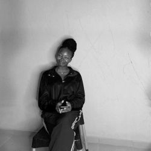

Olaniyan Oyinkansinuola

Summary
I am an enthusiastic and result-oriented entry-level software engineer with a strong foundation in web development languages like HTML, CSS, and JS.
I am also skilled in translating complex technical concepts into clear and concise language for diverse audiences
Education
- Agricultural Economics (B.Agric)- University of Ibadan (2020-present)
- Frontend Development- ALX Professional Foundations Course (July-September 2024)
- Frontend Development- AltSchool Africa School of Engineering (November-present)
Work Experience
Product Manager- ALX Foundational Program
July 2024 - Present
- Identified and located relevant data to support my team's problem statement for a product to provide accessible healthcare for the disabled.
This led to my contribution to the building of an app that contributed to the major advancement of accessible healthcare facilities for the disabled in the community.
Technical Writer- Technical Writing Mentorship Program Training
September 2024 - Present
- Developed comprehensive user manuals, tutorials, and online help documentation for beginners.
Wrote clear and concise technical content, tailored to different user levels and backgrounds.
Skills
Awards or Achievements
- Best HTML Portfolio Project
Other